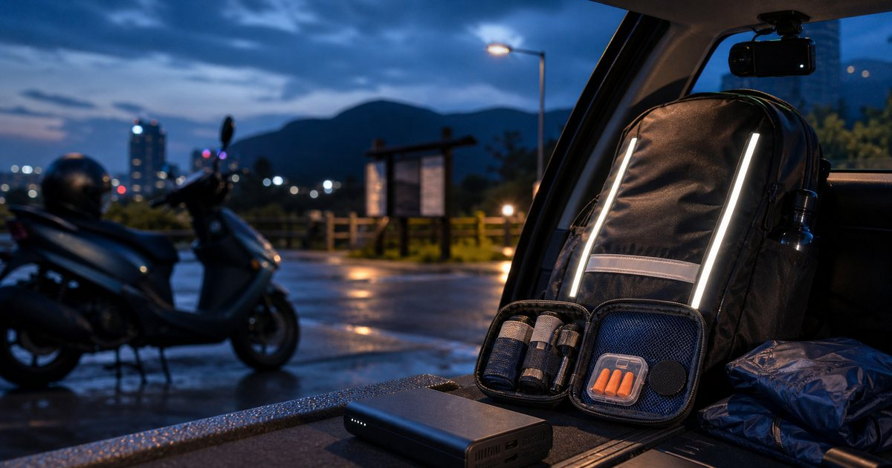

夜間移動與戶外安全感：反光配件、行車紀錄、護具與降噪睡眠怎麼準備
夜間移動不只靠一件裝備解決。反光配件提高辨識度，行車紀錄保留行程資訊，護具與耳塞則分別處理身體支撐與休息品質，重點是分工清楚。

先把夜間移動拆成四個任務
夜晚、雨霧、地下停車場、郊區道路和露營區返程，都會讓辨識、疲勞和反應時間變得更敏感。這時候不能只想「我要買更亮的東西」，而要先問：誰需要看見我、我需要記錄什麼、身體哪裡容易疲累、到達後能不能恢復。
反光屋 FKW 適合處理低能見度辨識；安鈦科技行車記錄器偏向行程與車用紀錄；BELEX、Jasper 大來護具可作為身體支撐用品的選項；耳根清靜則適合處理住宿、車廂或露營時的噪音休息。
- 辨識：反光配件、亮色小物、燈光位置。
- 紀錄：行車記錄器、電力與固定位置。
- 支撐：護膝、護腰、護踝依實際需求評估。
- 恢復：耳塞、眼罩、保暖層與安靜環境。
反光配件不是裝飾，而是讓位置更容易被辨識
反光配件最適合放在動線上容易被看見的位置，例如背包後側、雨衣背部、車身側邊、行李箱拉桿或安全帽後方。它不必大到破壞穿搭，也不該被理解成保證安全；它的價值是提高辨識度。
反光屋 FKW 這類品項適合用小面積多點配置，而不是只貼一大片。因為背包、外套皺摺、車身角度都會影響可見範圍，多點分散更不容易被單一遮擋影響。
- 背包、雨衣、車身分散配置。
- 避免貼在會被包包或外套遮住的位置。
- 夜間步行、騎乘與停車場場景要分開思考。
行車紀錄器處理的是紀錄，不是安全保證
安鈦科技行車記錄器這類車用電子配件，適合放在經常開車、騎車或長途移動的人清單裡。它的重點不是讓你冒更大風險，而是在合理駕駛前提下，保留路況與行程資訊。
選行車紀錄器時，解析度、夜間表現、安裝穩定、記憶卡維護和電力配置都要一起看。若你常在雨天、夜間或山區移動，也要確認固定位置不會影響視線，並定期檢查錄影是否正常。
- 不要只看規格數字，也要看安裝位置與後續維護。
- 記憶卡需要定期檢查，不要等需要影像時才發現沒有錄到。
護具要回到身體負擔，不要變成安心幻覺
BELEX、Jasper 大來護具和 Cool Sport Support 這類用品，適合在長時間步行、搬裝備、通勤久站或運動後支撐需求中評估。但護具不能取代暖身、休息、訓練或醫療判斷，也不能承諾改善疼痛。
如果你只是偶爾夜間移動，不一定需要護具；若你常搬露營箱、騎車久坐、下坡膝蓋不舒服，才值得更仔細比較護膝、護腰或護踝的包覆、尺寸與穿戴時間。
- 先確認是膝、腰、踝哪個部位容易疲累。
- 尺寸與穿戴方式比品牌名更重要。
- 有疼痛、受傷或長期不適時，應先尋求專業醫療建議。
降噪用品是到達後的恢復工具
很多夜間移動的疲勞，其實出現在到達之後：露營區有人聊天、旅館隔音不好、車宿旁邊有聲音，睡不好會讓隔天的判斷力下降。耳根清靜的耳塞適合放在旅行睡眠或露營休息包裡。
耳塞的選擇不只看隔音強度，也要看佩戴舒適、是否適合睡姿、是否容易遺失，以及你是否需要保留部分環境聲音。需要注意環境變化的場合，不應過度隔絕聲音。
- 睡眠時使用與通勤途中使用，要用不同安全標準。
- 耳塞、眼罩、保暖外層可以放在同一個恢復小袋。
把夜間包分成車上、身上與睡眠三層
真正好用的夜間移動配置，通常不是一個很大的包，而是三層：車上固定裝備、身上可見與可取的物品、到達後恢復用品。Momax 可以補充電力與線材，OMBRA 則適合雨天外層，讓夜間移動不會因沒電或突發雨勢打亂。
車上放行車紀錄、反光備品、充電線；身上放反光配件、小燈、雨具；睡眠袋放耳塞、眼罩與保暖小物。當每層任務清楚，夜間移動就不需要靠臨時翻找來維持安全感。
- 車上固定：行車紀錄、充電、備用反光配件。
- 身上可取：反光、雨具、小燈、手機。
- 到達後恢復：耳塞、眼罩、薄外套。
FAQ
反光配件可以保證夜間安全嗎？
不可以。反光配件只能提高低能見度下的辨識度，不能取代照明、路況判斷、防禦駕駛或安全規範。
行車紀錄器是不是夜間移動必備？
若你經常開車、騎車或長途移動，行車紀錄器很值得納入車用配置；但它的角色是紀錄路況，不是降低風險本身。安裝與維護也要定期確認。
護具可以拿來預防所有運動傷害嗎？
不可以。護具需要依部位、尺寸、使用時間與活動型態評估，不能取代訓練、休息或醫療診斷。若已有疼痛或受傷，應先諮詢專業人員。
下一步建議
如果你常在夜間移動，先把辨識、紀錄、身體支撐與休息恢復拆開處理，裝備會更清楚也更好維護。
重要警語
本文為一般選購與生活情境整理，不構成醫療、專業戶外訓練或安全保證。戶外活動請依天候、路線、個人體能與現場規範評估；涉及食材、雨具、護具、車用或睡眠用品，實際規格、價格、活動與庫存請以商品頁公告為準。
本文含品牌／商品導購連結；若你透過部分商品連結前往選購，Elite Fashion 可能取得合作收益。本文仍以編輯判斷與使用情境整理為主，價格、規格、活動與庫存請以商品頁公告為準。